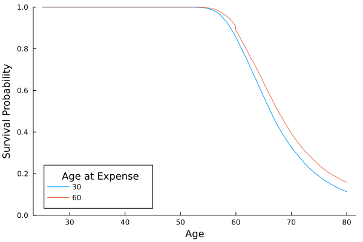

Overview
The goal of the advanced example is to demonstrate how to perform more complex Monte Carlo simulations of your retirement scenario. The advanced example will cover three new techniques:
- simulating plausible dynamics in the stock market
- creating a custom update function to include a large, one-time expense at various time points
- performing the simulation across multiple values of a parameter
Adding these techniques to your toolkit will allow you to simulate more plausible retirement simulations, customize the behavior of the simulation to address your own questions and goals, and systematically compare different scenarios conveniently within the same code.
Example
The advanced example builds upon the intermediate example, making three changes outlined above.
Load Packages
The first step is to load the packages required for simulating a retirement scenario and analyzing the results. In the code block below, we will load RetirementPlanners to run the simulation, Distributions to make the simulation stochastic, and StatsPlots to plot the results of the simulation.
using DataFrames
using Distributions
using Random
using RetirementPlanners
using StatsPlots
Random.seed!(574)Create Model
The Model object defines the parameters and behavior of the retirement investment simulation. As in the basic example, you must enter a value for the following keyword parameters:
Δt: the time step in yearsstart_age: the age of the person at the beginning of the simulationduration: the number of years to simulatestart_amount: the amount of money in investments at the beginning of the simulation
In this example, we will use the same timing paramers used in the basic example: we will assume you start saving for retirement at age 25 with a modest initial amount of $10,000. The simulation will update on a monthy basis and continue for 55 years until you reach age 80.
Withdraw
The withdraw function below extends the variable_withdraw function from the intermediate example by allowing us to specify the amount and timing of a one-time large expense. The keyword arguments for custom_withdraw are defined as follows:
start_age: the age in years at which regular monthly withdraws beginage_at_expense: the age in years at which the one-time expense occursexpense: the amount of the expense in dollarsdistribution: the distribution of regular monthly withdraw amounts
The function custom_withdraw has two basic parts based on the top-level if statement. The first part of the if statement implements the logic for the large one-time expense. The second part implements the logic for the regular monthly withdraw. Notice that the one-time expense and monthly withdraw are mutually exclusive rather than additive. Changing this logic is possible, but does not have much of an effect on the simulation results.
function custom_withdraw(
model::AbstractModel,
t;
start_age,
age_at_expense,
expense,
distribution
)
# make withdraw for major expense if possible
if age_at_expense ≈ t
model.state.withdraw_amount = expense
if model.state.net_worth < expense
model.state.withdraw_amount = model.state.net_worth
else
model.state.withdraw_amount = expense
end
# after specified start age, with draw random amount. Otherwise, no withdraw.
elseif start_age ≤ t
withdraw_amount = rand(distribution)
if model.state.net_worth < withdraw_amount
model.state.withdraw_amount = model.state.net_worth
else
model.state.withdraw_amount = withdraw_amount
end
else
model.state.withdraw_amount = 0.0
end
return nothing
endInvestment
Following the intermediate example, we will use the variable_investment function to control investment behavior in the simulation. To account for fluctuations in income and expenses, variable_investment allows us to specify a distribution of investment amounts rather than fixed investment amount.
Interest
In this example, we will simulate growth the stock market using a stochastic process model called Geometric Brownian Motion (GBM). One advantage of GBM is that it provides a more accurate description of the temporal dynamics of stock market growth: the value of the stock market is noisy, but current value depends on the previous value. Below, we will use the function dynamic_interest to simulate stock market growth with the GBM.
Brownian motion component of GBM is based on random movement of particles in space when no force is present to move the particles in a specific direction. Although particle physics seems disconnected from stock market behavior, it turns out to be a reasonable model because there is inherent randomness in stock prices as well as a general tendency to grow. If we add a growth rate parameter to Brownian motion and force the price to change proportially to its current value, the result is the GBM. The stochastic differential equation for the GBM is given by:
$X(t) = X(t)[ \mu dt + s \sqrt{dt}],$
where $X(t)$ is the stock market value at time $t$, $dt$ is the infintesimal time step, $\mu$ is the average growth rate, and $s \sim \mathrm{normal}(0,\sigma)$ is normally distributed noise with standard deviation $\sigma$. The stochastic differential equation has two terms:
- $\mu dt$: represents the average growth rate of the stock market.
- $s \sqrt{dt}$: represents the diffusion or jitter in the growth rate, which sometimes causes the price to increase or decrease more than the average growth rate.
An important implication of multipling the two terms on the right hand side by $X(t)$ is that growth and volitiliy scale with the current price, and the price cannot be negative. The code block below illustrates how to simulate and plot 10 trajectories of the GBM. The growth rate is $\mu=.07$ with a standard deviation of $\sigma=.07$, indicating moderately high volitility. In the simulation, the step size is 1 day and the trajectories generated from the model span 10 years.
gdm = GBM(; μ = .07, σ = .07)
trajectories = rand(gdm, 365 * 10, 10; Δt = 1 / 365)
plot(trajectories, leg=false, grid=false)Inflation
In the example below, we will also use the GBM to simulate inflation in the economy. The primary difference will be the values assigned to the parameters $\mu$ and $\sigma$. The function for using the GMB as a model of inflation is dynamic_inflation.
Model
All of the assumptions described above are encoded into the model object in the code block below.
model = Model(;
Δt = 1 / 12,
start_age = 25,
duration = 55,
start_amount = 10_000,
withdraw! = custom_withdraw,
invest! = variable_investment,
update_income! = variable_income,
update_inflation! = dynamic_inflation,
update_interest! = dynamic_interest
)Configure Update Options
Now that we have defined the basic components of the Monte Carlo simulation model, we will specify the parameters of the update functions.
Investment
As in the intermediate example, the mean monthly investment follows a normal distribution with a mean of $2,000 and a standard deviation of $500 to reflect fluctuations in income and expenses. As before, investments are made until an early retirement at age 40.
Withdraw
Upon retirement at age 40, we again assume that you withdraw $2,200 per month with a standard deviation of $500 to reflect fluctuation in monthly expenses. However, we assume that there is a large expense of $15,000 at age 30 in one simulation and at age 60 in the others. To perform a grid search over these values, we wrap them in a vector as follows: age_at_expense = [30,60]. It is worth noting that in principle we can vary additional factors in the simulation, such as the large expense amount, or the investment distribution. For the sake of simplicity, we will only vary age-at-expense to observe its impact on the survival probabilities across time.
Interest
Unlike the previous examples, we will use the Geometric Brownian Motion (GBM) process to simulate growth in the stock market and inflation in the monetary system. We will assume that the yearly growth rate on investments has a mean of .07 with a standard deviation of .05 to reflect inherent volitility in the stock market.
Inflation
Similarly, we will use GBM to simulate inflation in the economy. In so doing, we will assume a yearly inflation rate has a mean of .035 and a standard deviation of .005. All the assumptions specified above are specified in the config object below.
config = (
# invest parameters
kw_invest = (
distribution = Normal(2000, 500),
end_age = 40,
),
# interest parameters
kw_interest = (
gbm = GBM(; μ = .08, σ = .05),
),
# inflation parameters
kw_inflation = (
gbm = GBM(; μ = .035, σ = .005),
),
# withdraw parameters
kw_withdraw = (
age_at_expense = [30,60],
expense = 15_000,
distribution = Normal(2200, 500),
start_age = 40,
)
)Run Grid Search
In the code block below, we will perform a grid search over the values for age-at-expense to see how it affects the survival probability of the retirement plan across time. As its name implies, this is performed with the function grid_search which takes as input the model object, the Logger object type, n_reps, and our simulation configuration object, config. Internally, grid_search calls simulate! for each value of age-at-expense. The second line in the code block converts the results to a DataFrame to make subsequent analysis and plotting easier.
# perform the grid search for age_at_expense using 10_000 reps per condition
results = grid_search(model, Logger, 10_000; config)
# convert output to data frame
df = to_dataframe(model, results)13200000×6 DataFrame
Row │ time rep net_worth interest inflation withdraw_age_at_expense
│ Float64 Int64 Float64 Float64 Float64 Int64
──────────┼────────────────────────────────────────────────────────────────────────────────
1 │ 25.0833 1 12839.3 0.168697 0.0256016 30
2 │ 25.1667 1 14376.0 -0.0600889 0.0395033 30
3 │ 25.25 1 16297.6 -0.244519 0.0583386 30
4 │ 25.3333 1 18628.6 0.160349 0.0499842 30
5 │ 25.4167 1 20787.8 0.0607486 0.0499415 30
⋮ │ ⋮ ⋮ ⋮ ⋮ ⋮ ⋮
13199997 │ 79.75 10000 6.48052e5 -0.189062 0.0411538 60
13199998 │ 79.8333 10000 6.43572e5 0.00590992 0.044513 60
13199999 │ 79.9167 10000 6.36921e5 -0.00792474 0.075874 60
13200000 │ 80.0 10000 6.36214e5 0.0840805 0.0522622 60
13199991 rows omittedSurvival Analysis
In this section, we will perform a survival analysis to determine the probability that the retirement plan will be successful (i.e., net worth > 0) as a function of time. The first step is to create a new indicator variable in the dataframe called survived, which is true if the net worth at time $t$ is greater than zero, and is false otherwise. The subsequent line groups the dataframe according to the factors age-at-expense and time and computes the mean of each combination across all repetitions.
# code surival at each time point as true or false
df.survived = df.net_worth .> 0
# compute the surival probability as a function of age at expense and time
df_survival = combine(groupby(df, [:withdraw_age_at_expense,:time]), :survived => mean => :survival_prob)1320×3 DataFrame
Row │ withdraw_age_at_expense time survival_prob
│ Int64 Float64 Float64
──────┼─────────────────────────────────────────────────
1 │ 30 25.0833 1.0
2 │ 30 25.1667 1.0
3 │ 30 25.25 1.0
4 │ 30 25.3333 1.0
5 │ 30 25.4167 1.0
⋮ │ ⋮ ⋮ ⋮
1317 │ 60 79.75 0.5792
1318 │ 60 79.8333 0.577
1319 │ 60 79.9167 0.5754
1320 │ 60 80.0 0.5739
1311 rows omittedThe code block below generates a plot of the survival probability as a function of time for each level of age-at-expse. As the plot shows, incurring the expense at age 30 reduces the surival probability compared to incurring the cost at age 60. As time continues, the difference in survival probability between the two levels increases. The primary reason is because early withdraw incurrs a larger opportunity cost for compounding interest. In this particular case, the impact was small to moderate, but the effect would be larger with a larger expense.
@df df_survival plot(:time, :survival_prob, group=:withdraw_age_at_expense,
ylims=(0,1), legendtitle="Age at Expense", grid=false, xlabel="Age",
ylabel="Survival Probability", legend=:bottomleft)